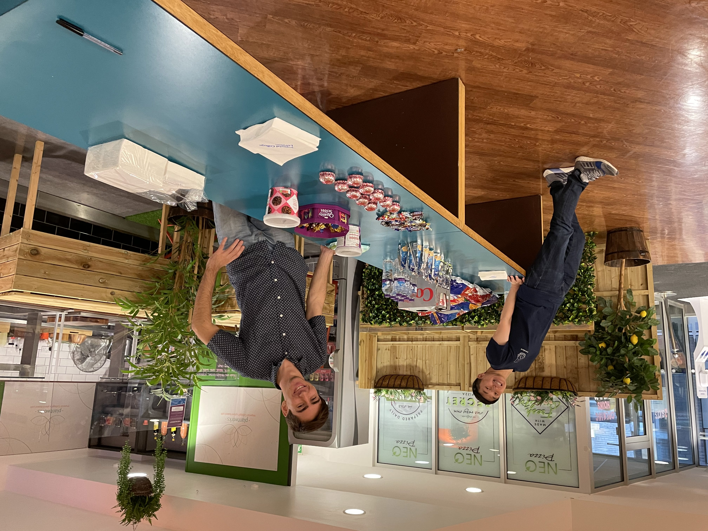
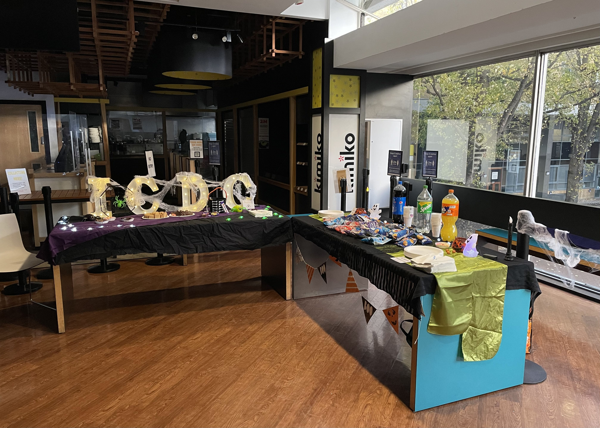
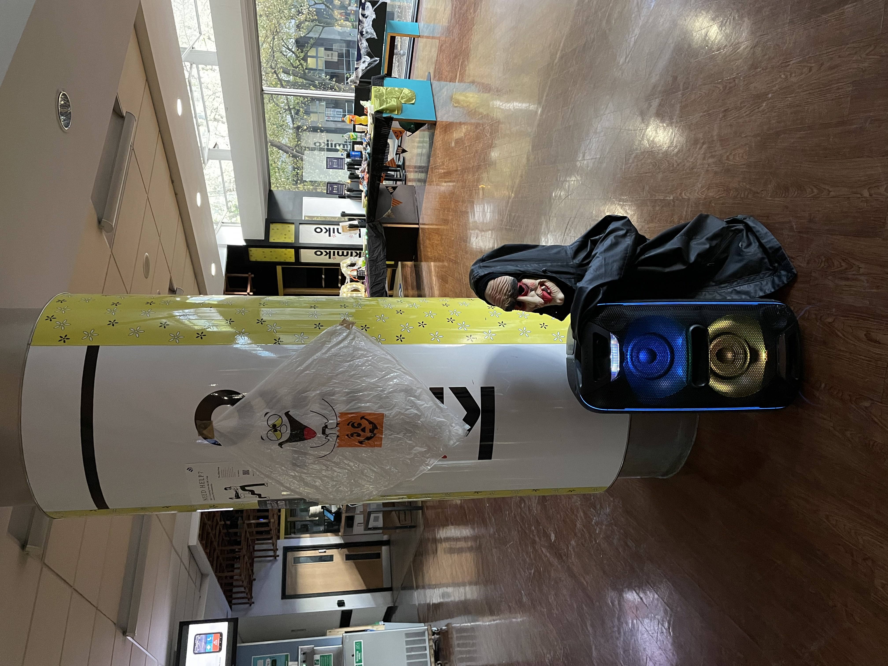
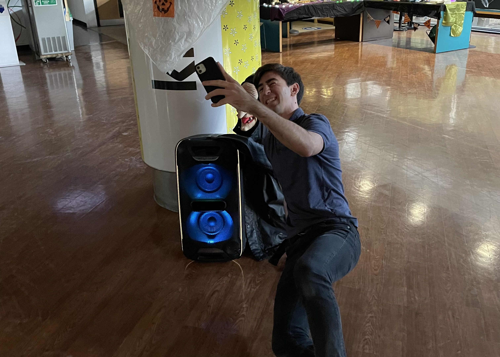
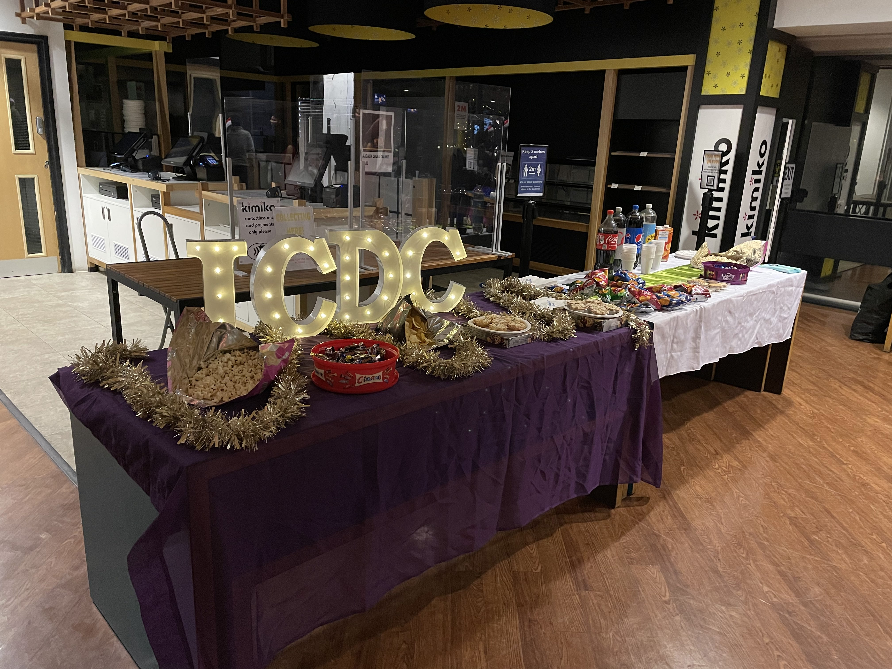
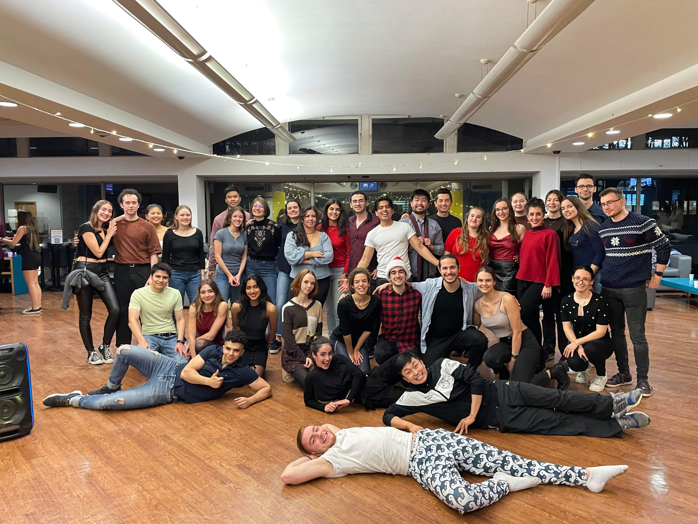
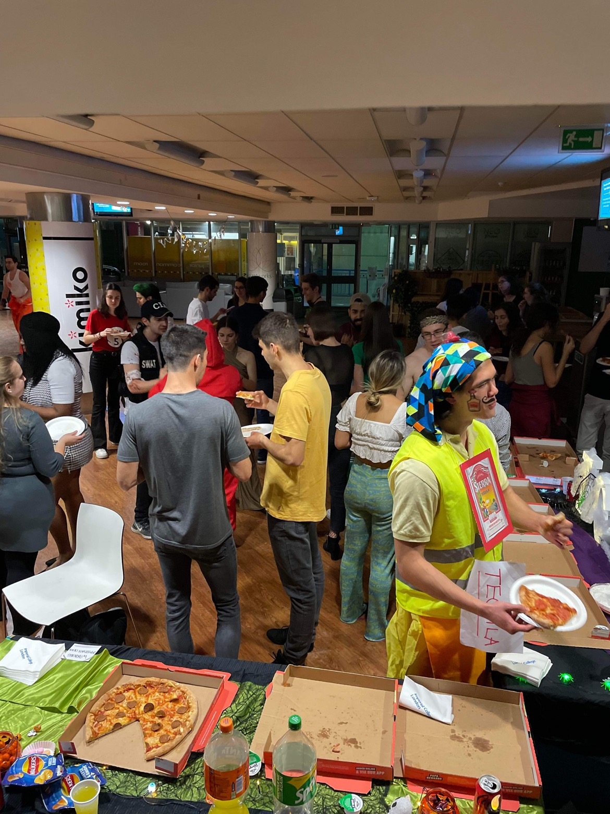
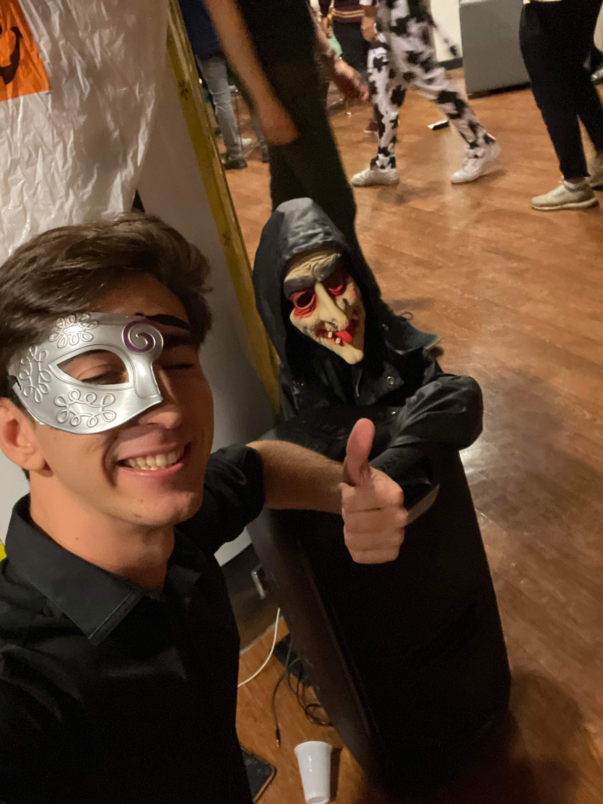

IC knows how to party!
It’s the last day of term, what’s a better celebration than recapping the amazing socials that we’ve held this term? 🔥
What was your favourite moment? Was it meeting new buddies at the freshers’ or winning the best costume at Halloween or demoing a two-man cha at Christmas? My personal favourite was the selfie of our VP social Marcos and DJ Casper 👻
       
We hope everyone will have a relaxing holiday and we will see you all again in the new year! 🥰💝
- Next: UEA Friendly 2022 Results
- Previous: Nottingham Varsity 2021